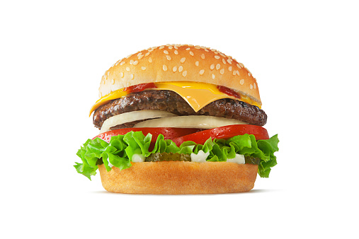

Recipe for Jackson's Cheeseburger

Description
This recipe has been brought down the Tujo bloodline for generations. It will be sure to satisfy your cheeseburger cravings
Ingredients
- Ground Beef
- Hamburger Buns
- American Cheese
- Your choice of toppings
- Take a handful of ground beef and mold it into a patty shape
- Place the patty on the grill
- add slice of cheese as beef turns brown
- Grill until brown, but not too dark
- Place hamburger onto a bun
- Add toppings as you wish
- You now have a Jackson burger